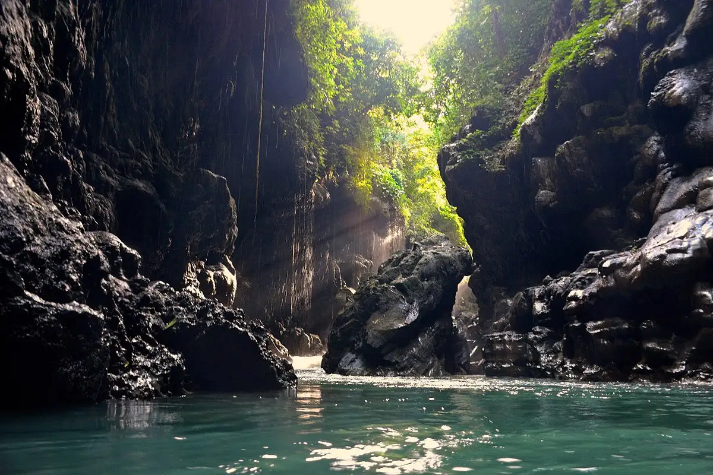

CILEGON
Kota metropolitan terbesar di Provinsi Banten.
Kota metropolitan terbesar di Provinsi Banten.

Kota Cilegon memiliki akar sejarah yang kuat, berawal sebagai bagian dari wilayah Kesultanan Banten. Salah satu peristiwa paling heroik di wilayah ini adalah Geger Cilegon pada tahun 1888, di mana rakyat dan para ulama, termasuk KH. Wasyid, melakukan perlawanan bersenjata menentang penindasan pemerintah kolonial Hindia Belanda. Memasuki era modern, Cilegon bertransformasi menjadi pusat industri sejak didirikannya pabrik baja Trikora pada tahun 1962. Pabrik ini kemudian berkembang menjadi PT Krakatau Steel pada tahun 1970, yang secara permanen mengukuhkan identitas Cilegon dengan julukan "Kota Baja". Secara administratif, Cilegon yang mulanya berstatus sebagai Kota Administratif di bawah Kabupaten Serang, secara resmi disahkan menjadi kotamadya mandiri pada tanggal 27 April 1999.

Secara geografis, Cilegon terletak di ujung barat laut Pulau Jawa, Provinsi Banten, dan menjadi titik paling barat dari pulau ini yang berbatasan langsung dengan perairan Selat Sunda. Topografi kota ini cukup beragam, membentang dari wilayah dataran rendah di area pesisir hingga perbukitan dengan ketinggian mencapai 553 meter di atas permukaan laut. Batas daratannya sepenuhnya dikelilingi oleh Kabupaten Serang di sisi utara, timur, dan selatan. Cilegon memiliki peran yang sangat strategis secara nasional berkat keberadaan Pelabuhan Merak, yang menjadi pintu gerbang utama jalur laut penghubung antara Pulau Jawa dan Pulau Sumatera. Selain daratan utama, kawasan ini juga meliputi beberapa pulau kecil tak berpenghuni seperti Pulau Merak Besar dan Pulau Merak Kecil yang berperan penting sebagai penahan ombak alami dan kawasan lindung.
Kota Cilegon dialiri dua sungai utama, yaitu Sungai Cikapundung dan Sungai Citarum beserta anak-anak sungainya yang pada umumnya mengalir ke arah selatan dan bertemu di Sungai Citarum. Dengan kondisi yang demikian, Cilegon selatan sangat rentan terhadap masalah banjir terutama pada musim hujan.

Meskipun sangat lekat dengan citra sebagai kota industri berat, Cilegon tetap menyimpan potensi pariwisata alam maupun buatan yang menarik. Pada sektor wisata bahari, wisatawan kerap menyeberang ke Pulau Merak Kecil dan Merak Besar untuk menikmati pasir putih serta melihat aktivitas lalu lintas kapal feri dari dekat, atau bersantai bersama keluarga di Pantai Kelapa Tujuh dan Pulorida. Bagi para pecinta rekreasi alam, kawasan Batu Lawang, Bukit Batu Gambir, serta Bukit Teletubbies Merak menawarkan jalur pendakian ringan dengan panorama lanskap Kota Cilegon dan perairan Selat Sunda dari atas ketinggian. Selain itu, Cilegon juga menawarkan wisata edukasi dan buatan yang unik, mulai dari Edu-Tour ke dalam kawasan industri baja Krakatau Steel, Istana Taman Cadas yang menyulap bekas galian tambang pasir menjadi bangunan menyerupai kastil abad pertengahan, hingga Alun-Alun Kota Cilegon yang menjadi denyut nadi ruang publik warga untuk berolahraga dan berekreasi.

Berada di jalur utama Bandung-Lembang, Farm House menjadi objek wisata yang tidak pernah sepi pengunjung. Selain karena letaknya strategis, kawasan ini juga menghadirkan nuansa wisata khas Eropa. Semua itu diterapkan dalam bentuk spot swafoto Instagramable.

Memiliki beberapa teleskop, antara lain, Refraktor Ganda Zeiss, Schmidt Bimasakti, Refraktor Bamberg, Cassegrain GOTO, dan Teleskop Surya. Refraktor Ganda Zeiss adalah jenis teleskop terbesar untuk meneropong bintang. Benda ini diletakkan pada atap kubah sehingga saat teropong digunakan, atap tersebut harus dibuka. Observatorium Bosscha boleh dikunjungi oleh siapa pun, tanpa tiket. Namun, bagi yang ingin menggunakan teleskop Zeiss, wajib mendaftarkan diri. Untuk instansi atau lembaga pendidikan, diberikan jadwal hari Selasa sampai Jumat. Sementara itu, kunjungan individu dibuka setiap hari Sabtu.